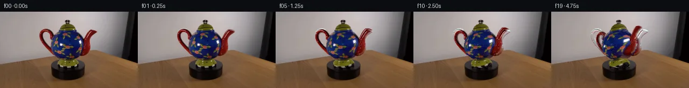

![首帧]()

Round 00
2026-11-05T18:37:59.054143+00:00像素候选变化代码 +359/−0inspection 更新
pixels 4b4a10246b96c832 · code 7b5247194a749194
查看本轮 generate.py 真实 diff
--- previous/generate.py
+++ current/generate.py
@@ -0,0 +1,359 @@
+"""Deterministic, local pixel/geometry continuation of the provided photograph."""
+from pathlib import Path
+import json
+import math
+import numpy as np
+import cv2
+from PIL import Image, ImageDraw
+from scipy.ndimage import distance_transform_edt, gaussian_filter
+from scipy.interpolate import PchipInterpolator
+from artifact_io import save
+
+ROOT = Path(__file__).resolve().parent
+SOURCE = np.asarray(Image.open(ROOT / 'first_frame.png').convert('RGB'))
+H, W = SOURCE.shape[:2]
+S = 3
+CX, CY = 125.0, 64.0
+ELEV = math.radians(14.0)
+CE, SE = math.cos(ELEV), math.sin(ELEV)
+
+POLYGONS = {
+ 'body': [(110,36),(119,35),(132,35),(141,38),(147,44),(152,51),
+ (156,58),(157,64),(155,72),(152,78),(146,84),(139,88),
+ (131,91),(120,92),(111,89),(104,85),(99,78),(96,71),
+ (94,64),(95,57),(98,49),(102,44),(107,39)],
+ 'lid': [(111,36),(110,33),(112,28),(116,24),(121,22),(123,21),
+ (121,19),(120,18),(122,15),(126,14),(129,17),(129,20),
+ (128,21),(134,23),(138,27),(141,32),(142,36),(136,38),(114,38)],
+ 'foot': [(119,88),(117,92),(111,93),(108,95),(106,99),(107,102),
+ (112,104),(119,106),(136,106),(143,104),(146,101),
+ (146,97),(142,94),(135,92),(134,89)],
+ 'handle': [(96,54),(92,52),(91,43),(89,39),(86,37),(82,37),(79,39),
+ (78,42),(79,48),(82,54),(87,61),(93,67),(102,74),
+ (105,79),(100,83),(95,78),(89,73),(84,67),(79,61),
+ (76,54),(73,47),(72,41),(74,36),(78,33),(83,32),
+ (89,32),(94,35),(97,39),(98,46),(99,51)],
+ 'spout': [(149,81),(152,74),(155,66),(154,57),(156,50),(159,43),
+ (163,38),(168,35),(174,33),(178,34),(181,36),(178,39),
+ (173,43),(169,48),(167,54),(167,60),(169,66),(169,71),
+ (166,77),(162,81),(156,84)],
+}
+
+def polygon_mask(points):
+ out = np.zeros((H,W), np.uint8)
+ cv2.fillPoly(out, [np.asarray(points, np.int32)], 1)
+ return out
+
+def derive_masks():
+ """All masks are inferred here from this photograph and explicit measurements."""
+ coarse = {k: polygon_mask(v) for k,v in POLYGONS.items()}
+ union = np.maximum.reduce(list(coarse.values()))
+ kernel = np.ones((3,3), np.uint8)
+ possible = cv2.dilate(union, kernel, iterations=2)
+ seeds = cv2.erode(union, kernel, iterations=1)
+ gc = np.full((H,W), cv2.GC_BGD, np.uint8)
+ gc[possible.astype(bool)] = cv2.GC_PR_BGD
+ gc[union.astype(bool)] = cv2.GC_PR_FGD
+ gc[seeds.astype(bool)] = cv2.GC_FGD
+ cv2.setRNGSeed(3175)
+ cv2.grabCut(SOURCE, gc, None, np.zeros((1,65)), np.zeros((1,65)),
+ 5, cv2.GC_INIT_WITH_MASK)
+ fg = ((gc == cv2.GC_FGD) | (gc == cv2.GC_PR_FGD)).astype(np.uint8)
+ masks = {}
+ for name, base in coarse.items():
+ neighborhood = cv2.dilate(base, kernel, iterations=1)
+ masks[name] = (fg & neighborhood).astype(np.uint8)
+ # The body is a single smooth rotational solid; do not carry a handle/spout
+ # patch into its texture or cover the gold lid with blue texture.
+ yy,xx = np.mgrid[:H,:W]
+ masks['body'] &= ((xx >= 93)&(xx <= 157)&(yy >= 35)&(yy <= 92)).astype(np.uint8)
+ masks['handle'] &= ((xx <= 104)&(yy >= 31)&(yy <= 83)).astype(np.uint8)
+ masks['spout'] &= ((xx >= 149)&(yy >= 32)&(yy <= 85)).astype(np.uint8)
+ masks['lid'] &= ((xx >= 110)&(xx <= 143)&(yy <= 38)).astype(np.uint8)
+ masks['foot'] &= ((xx >= 105)&(xx <= 147)&(yy >= 88)&(yy <= 107)).astype(np.uint8)
+ # Remove tiny disconnected background decisions. Keep the dark knob with lid.
+ for name, m in masks.items():
+ count, labels, stats, _ = cv2.connectedComponentsWithStats(m,8)
+ for j in range(1,count):
+ if stats[j,cv2.CC_STAT_AREA] < 3:
+ m[labels == j] = 0
+ return masks
+
+MASKS = derive_masks()
+SH, SW = H*S, W*S
+GY,GX = np.mgrid[:SH,:SW].astype(np.float32)
+PX, PY = (GX+.5)/S-.5, (GY+.5)/S-.5
+
+def sample(image, x, y, interpolation=cv2.INTER_LINEAR):
… diff truncated; 272 more lines …